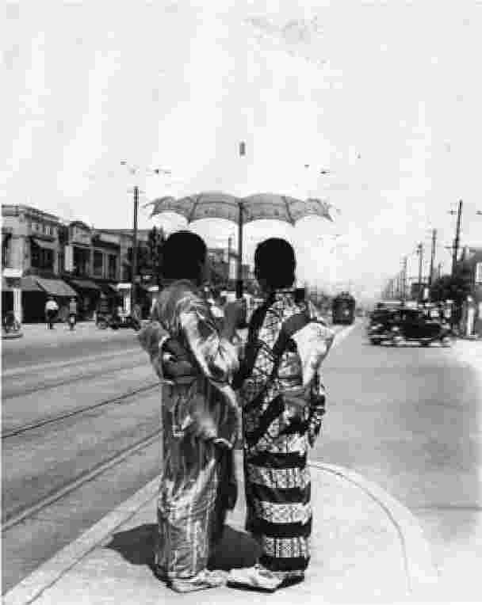
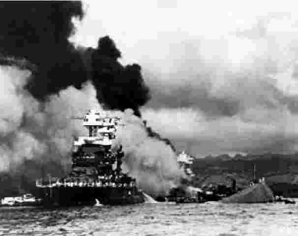
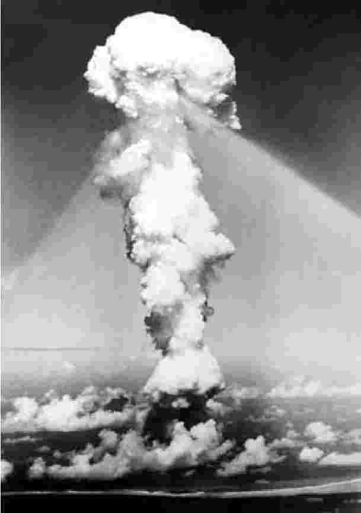

面对所谓西方世界列强时的国耻感和不安感，触发了19世纪下半叶席卷日本的巨大变化。然而，日本成功地接纳了现代性的观念和外在特征，并摆脱了强加在它身上的不平等条约，民族自信心因而高涨。日本社会的某些部分选择接受一种观点，即现代性是成套的，不仅包括技术革新，也包括社会道德观念和文化实践；然而另一些部分则开始运用新生的自信心，以此为契机，挑战现代性必然等同于西化的主张。既然日本已跻身现代世界，最紧迫的问题似乎不再是如何定义“现代日本的现代人”，而是转向了一个更为个人化的问题，即作为一个日本人首先意味着什么。
一方面，我们可能会看到对这一问题的浪漫回答。知识分子、作家、艺术家及活动家向想象中的日本往昔寻找有关日本人“本质”的线索。对其中一些人而言，这意味着将武士道重塑为“日本之魂”，或将神道教重塑为国家宗教和拜天皇教；对另一些人而言，这可能意味着重新发现对易碎、阴暗之美的特殊审美，它是日本美学的特点。换言之，现代性带来的核心挑战之一，是它迫使日本社会自省其认同，从而催生了新的文学，这种文学后被称作“日本人论”。在许多人看来，问题在于如何令这种认同适应现代世界的要求。
另一方面，我们可能会看到一种更接近沙文主义的反应。这类观点认为，核心困境并非如何在现代化带来的急剧变化中保存“日本人”的元素，而是如何对抗现代化进程本身。这一立场将日本的传统（且不论是否由生造而来）极端化，并断言这些传统较西方国家的传统优越，据此认为在“进步”这一错误伪装下，西方国家传统将有可能污染并削弱日本。随着日本自信心与力量的增长，上述沙文主义便有陷入侵略性使命感的可能，即认为日本在道义上有义务重申它自己真正的认同，而这一义务意味着，帮助其他亚洲国家超克现代性及西化的隐性感染，是所谓日本在道义上的“使命”。简而言之，上述立场提供了条件，令一种自相矛盾的、反帝国主义的帝国主义有可能在亚洲出现；日本的任务是将亚洲从西方帝国主义的掌控中解放出来。
上一章已经论及，就其特征而言，明治维新及随之而来的革命具有帝国的本质。在被称为“帝国的年代”的时期，西方列强的魔爪已经遍布亚洲，在日本的政治和军事精英看来，他们的新生帝国主义国家也应拥有自己的帝国，这似乎十分自然。方从欧洲回到日本的山县有朋，正是抱着这种想法，效仿彼时最强大的帝国主义国家——狭小岛国大不列颠的海军，努力去建设强大的日本海军。
虽然西乡隆盛在1870年代早期入侵朝鲜的计划遭到元老们，尤其是遭到山县有朋的阻止（元老们为阻止该计划提前结束了岩仓使节团在欧洲的行程），但政府并非反对这一计划的帝国主义野心，而是反对其方式和冒险的理由。事实上，山县本人在1876年论述说，朝鲜是日本“区位优势”的重要组成部分，朝鲜（作为不甚现代的社会）较为弱小，难以抵御日本的区域野心和西方野心，同时，这也使日本为朝鲜的孱弱所累。山县声称，既然总要落入某一方手中，朝鲜就应当受日本支配。
抱着这种帝国主义竞争的想法，兼且意识到自身是区域舞台上的新势力，日本在1876年将《江华条约》强加给朝鲜。《江华条约》的签订过程简直一如佩里强加《神奈川条约》于日本，前后相隔不过20年，两项条约的条款也具有相似的剥削性质。山县等人认为，朝鲜若不实现现代化，就不配享有平等条约。于是在整个1880年代，日本派遣特使，就如何实现教育体系、经济和政治体制现代化向朝鲜提出建议，恰如日本曾从欧洲获得类似的指导。
朝鲜形势极其复杂，尤其是因为日本和中国历来竞争对朝鲜半岛的影响力。《江华条约》及如此众多的日本顾问的存在激怒了中国统治者，也激怒了许多朝鲜民众。在日本，舆论领袖们试图依靠大亚细亚主义的花言巧语——说日本是在助朝鲜以助自身，作为亚洲兄弟国家帮助另一国抵御西方的威胁——来掩盖日本外交政策中赤裸裸的伪善。但针对日本特使们的暴力事件在朝鲜仍频频发生，最终在1894年爆发了反对外国干涉的全面起义，即东学党起义。这场起义部分是一场宗教运动，部分带有大众排外主义，部分带有反日情绪，它严重动摇了朝鲜的稳定，以至于朝鲜统治者为恢复秩序，向中国（朝鲜的传统宗主国）请求了军事援助。日本对这一举动深感恼火，遂以保卫“区位优势”为借口派自己的军队开赴朝鲜，并在朝同中国人发生了冲突。结果是引发了甲午战争，这是中日在现代的第一场战争。
拜山县有朋鼓动的现代化建设所赐，日本军队远较庞大邻国的军队强大。此外，日本以大英帝国为榜样，建设了一支有力的海军，史无前例地拥有了能与中国匹敌的海上力量，并且具有技术优势。结果日本取得了甲午战争的胜利，其在朝鲜的特权地位由此得到巩固。此外，日本还霸占了中国的台湾岛、中国大陆上虽小但具有重要战略价值的辽东半岛，并索取巨额现银作为战争赔偿。
日本人民曾对军队的军费和特权相当不满，但甲午战争这场巨大的成功受到了日本人的极度追捧。在公共空间中，兴起了众多为日本的帝国主义计划张目的言论，有社会达尔文主义和适者生存说（“要么成为帝国，要么只能做殖民地！”），有现代资本主义经济自然扩张进程说，还有对国家建设计划的浪漫呼声。就后者而言，在接下来的数十年中，日本公众被填塞了一系列意识形态建构，这种建构或许始于所谓的水户学。水户学混合了儒家孝道和神道教神话，制造了日本作为宗教秩序神圣中心的幻象，并把给亚洲人民带去天皇之光作为所谓的“道德使命”。
简单来说，公众对政治问题的所有权意识越来越强：日本是他们的 国家。事实上，自1890年在新宪法下进行首次选举以来，大众参政的动力就很强，那次选举中，两大政党（自由党和改进党）共赢得众议院300个议席中的171个席位。尽管选举权事实上仅为1%的人口（男性且为高额纳税人）所有，但国会议员和选民在支持社会福利措施方面态度严肃，因而也就严肃地运用他们制定国家预算的权力。市民社会则更广泛地在报章、集会和示威活动中进行此类辩论。
与此同时，对于让“平民”影响国家决策，尤其是影响军事预算，元老们、他们的亲政府政党（在1890年的选举中仅收获不到80个议席）和不经选举的贵族院深感怀疑。尽管有政党批评被山县坚称为保卫日本“区位优势”所必需的庞大军事开支，但事实上，这些政党对于重新分配预算以改善民众境遇却并不十分感兴趣——工人权益在很大程度上遭到忽视，直至1911年，才通过了一部极其软弱无力的工厂法；直至1920年代，妇女方获参与政治集会的权利。甲午战争带来的乐观情绪实际上在其后十年致使大众改变了对战争预算的看法（1895年，国会甚至投票支持一项法案，该法案旨在增加大企业税负，以增加政府预算），这种影响持续至1905年左右，当年在东京中心区域的日比谷公园发生了暴动 [1] ，抗议军队、军费和显然的军事失败，尽管日军在日俄战争中取得了胜利。
英国为日本的战胜叫好，并在不久之后终结了同日本的不平等条约，但并非所有欧洲列强都如英国一样乐见日本的胜利。《马关条约》的诸项条款甫一公开，俄国、法国及德国即发表了联合通牒，要求日本将辽东半岛返还给中国。俄国也自谋划在华势力范围，尤其是对俄国而言，虽小但具战略性的半岛给了日本在地区内的过大优势。日本公众将这场“三国干涉还辽”事件看作西方的奸诈，但日本别无选择，被迫撤回了军队。待到不久之后，俄国将半岛据为己有，其他欧洲国家乘中国孱弱之机，夺取了另一些港口城市，日本公众的怨恨情绪愈增。在许多日本人看来，“三国干涉还辽”及之后的事件似乎体现了单纯的种族主义：尽管日本已符合一个“现代国家”的所有标准、已将自身从不平等条约中解放出来，它仍然未被真正当作一个国际主体。
事实上，日本与俄国的缠斗才刚刚开始。所有列强都欲在亚洲——尤其欲在中国——建立势力范围，这令它们产生直接的军事接触。在世纪之交，中国北方兴起义和团运动（1899—1901），日本加入国际联盟以行打击，英俄两国也是联盟成员。后来，日本试图让英俄两国正式承认日本在朝鲜的权利要求。1902年，日本在外交上取得了一项重要进展：它同大英帝国结盟，根据盟约条款，英国承认日本在朝鲜的权利要求，并将同日本合作，对抗俄国在地区内的势力扩张。这是大不列颠首次与非西方国家结下正式同盟，日本国内对此大加炫耀，认为这意味着国家翅膀硬了。然而，俄国却未予相应的承认。
受日英同盟的鼓舞，前首相伊藤博文搬出了所谓的“满韩交换”（Mankankôkan），欲与俄国达成协议，以日本对俄国在中国东北优势的承认，换取俄国对日本在朝鲜特殊利益的承认。然而，这项提议被俄政府回绝。日本将俄国的回绝解读为对方确凿的敌意，断绝了两国的外交关系。在正式宣战前三小时，日本帝国偷袭了停泊在辽东半岛旅顺口的俄国太平洋分舰队。日本帝国海军进一步予俄国舰队以重创，围攻、占领旅顺口，而后在持续仅一天的对马海峡之战（1905年5月27日——28日）中完全击败了著名的波罗的海舰队。波罗的海舰队此前着实绕了大半个地球，经非洲好望角，欲突破旅顺口的包围圈（但在舰队到达时，旅顺口已经陷落）；日本在日本联合舰队总司令东乡平八郎的指挥下取得的胜利震惊了世界。俄国人感到他们不可能如此轻易地被日本人击败，莫斯科流传着出于愤怒、毫无根据的谣言——暗指波罗的海舰队是被作了伪装的英国海军摧毁。总司令东乡平八郎1870年代确实曾在大不列颠受训，他在对马之战以后获称“东方的纳尔逊” [2] 。英国皇家海军向东乡赠送了一束纳尔逊的头发，以庆祝他的功绩，山县有朋则在1906年从英王爱德华七世那里获颁功绩勋章。
日本的胜利在国际社会引发震荡，因为这是欧洲国家在现代首次被亚洲国家击败。俄国的军事力量遭到破坏，威望遭到严重损害——事实上，战败带来的耻辱也是为1917年俄国十月革命作铺垫的因素之一。然而，尽管日俄战争富有戏剧性、制造战功、带来胜利，但对于日本来说，却并非巨大的成功。终结战争的《朴茨茅斯条约》条款，显示交战双方事实上是两败俱伤、所获甚少。日本成功展现了等同于乃至超越西方列强之一的实力，并因此巩固了它在地区内的地位：俄国承认了日本在朝鲜的利益主张，而朝鲜将在1910年被日本悄然吞并。此外，俄国还被迫移交旅顺口的25年租约，将旅顺口给了日本，由此逆转了“三国干涉还辽”的结果。最终日本（仅）得到了库页岛的南半部分。然而，日本未能像甲午战争结束时那般得到巨额战争赔款，而日本公众认为这不可接受——在日本的一些主要城市，甚至发生了由此产生的示威暴动。
日本国会和广大公众不那么支持军队及军费了。事实上，在下一个十年中，日本的城市中心频频发生示威和暴动，抗议军费挤占公共交通费用及粮食费用，同时还时有支持扩大选举权的示威游行。
同一时期，工会和“互助会”开始为人接受，初生的社会主义运动也开始获得支持。1901年有一个社会民主党成立，但立即遭到禁止。在幸德秋水、片山潜等活动家的领导下，社会主义运动变得激进，转变成了无政府主义和共产主义，幸德和片山最终在1911年的大逆事件中被处死刑。即使在日俄战争之后，正统的日本国家建设计划也从未接受过左派，因为左派声言挑战将整个明治国家统合在一起的那个象征：天皇其人本身。
如此一来，1912年明治天皇睦仁的死去就成了现代日本史的真正转折点。明治见证了日本统一为民族国家，也见证了国家的现代化，日本成为能与西方平起平坐的帝国主义国家。然而，在他死去之时，日本已经开始进入一个新的政治阶段，因为民意转而反对国家的军事化，且正寻求在日本建立真正的参与民主制。政党更趋协调一致、更关注议题，而不再只是国会议员加入的俱乐部。事实上，在明治死去之年，立宪政友会领导人原敬成功搁置了军队的新预算。甚至政界元老山县有朋也未能使局势变得对军队有利。由此开创了一段后来被称为“妥协政治”的时期。原敬进而在1918年成为日本首位依托于政党的、平民出身的首相。
大正天皇嘉仁1912年至1926年在位，统治时期较短，昭和天皇裕仁随后即位，直至1989年死去，方结束其统治。在许多历史学家看来，日本经历一个世纪的战事和斗争，其间大正时期似乎是透着宁静的一扇小窗。知识分子和活动家如吉野作造提倡一种被称为民本主义（minponshugi）的民主，且他认为这同日本的君主立宪政体并不矛盾。同时，宪法学者如美浓部达吉认为，最好将天皇看作整个国家结构中的一个“机构”，而不应将其等同于整个国家。而像新渡户稻造这样的国际主义者则寄信心于新的世界秩序的形成，这样的秩序承认多样性和多元文化的成员资格。新渡户本人自1920年起就是国际联盟的副秘书长，还是国际智力合作委员会（联合国教科文组织的前身）的创始理事。
在此背景下，在迅速成长的城市中心，新的中产阶级正在兴起。所谓的工薪阶层（sarariman）——到处可见的白领工人——由此诞生。这一时期还能见到新的白领女性阶层，她们或是“办公室女性”，或是在商店做服务员。大体上，从事这些职业的女性薪水极低，但她们作为现代生活的标志，出现在大众文化之中：她们浮华而时髦，沉浸于商品和时尚的消费主义，常常被刻画成道德自由的女性，向顾客出售西式服装和吻。这便是现代女孩（moga）。新的中产阶级（相对于原武士家庭的“旧中产阶级”而言）被表征为自由的和开放的，他们经常在不同公司换不同工作，并且享受着现代生活的外在特征。
这种新的生活方式与新的文化相依共生，并且日本人在大正时期热烈地接纳了许多美国消遣方式：棒球和爵士乐最为普遍。但日本自身的文化也在发酵发展，芥川龙之介和谷崎润一郎等大概是日本现代最伟大的作家，他们书写阴暗而优美的短篇和长篇小说，思索一些问题——诸如在迅速变化的日本社会中个人和文化的认同。与此同时，前卫诗歌和艺术盛行。“一日元书籍”的出现，全国性和地方性报纸的进一步发展，小说、杂志、漫画租赁店的开张，都将文化素材带给更广泛的、教育程度不断提高的公众。
当然，中产阶级形象并非大正日本的全部。属于工人阶级的工厂劳动者曾是明治时期极为重要的群体，他们发现自己的境遇几无改善。年轻妇女又一次直面巨大的压力，男性则在更偏于重工业的、同样严苛的环境中辛苦劳作。不过，在大正时期，工人阶级也逐渐认识到了他们的苦境和力量：工人们开始组成工会和“互助会”，甚至部落民也开始通过结成水平社 [3] （Suiheisha）来参加社会行动。整个1920年代，地方性论争和罢工在数量上有所增长，因为活动家们开始接纳自由的乃至共产主义的思想。
大正时期好似没有战事的避风港，这种景象至少部分是仰赖日本在欧洲的第一次世界大战期间经历的经济繁荣。由于日本在一战时努力满足欧洲和国内需求，其工业产值增加到了原先的五倍，出口暴增（纺织品尤其突出）。在现代史上，日本首次成为了净债权国。
历史学家常常忽略日本在第一次世界大战中扮演的角色：日本应盟友大不列颠的要求，在1914年8月23日参战，而后迅速占有了德国在东亚的势力范围，包括山东和青岛。日本帝国海军进而在10月占领了一连串德国的岛屿殖民地，包括马绍尔群岛。此外，日本利用了地区内不稳定的局势，巩固其在中国东北的地位，并将矛头指向孱弱的中国——炮制了所谓的“二十一条要求”，对华索取经济和领土特权。而在其他地区，1917年俄国爆发十月革命后，日本还与美国联合作战，试图支持“白军” [4] ；它还向地中海派遣过一支由17艘舰船组成的海军中队，协助护送以马耳他为据点的英国船只。事实上，参与一战为日本赢得了凡尔赛宫的席位，四巨头（英国、法国、美国和意大利）在那里商议了1919年的和平条约 [5] ；日本同时还获得了国际联盟行政院的永久席位——这样的成绩二战后的日本在联合国却未能实现。
日本国内对西方各国的认可报以热情。然而，日本代表团并未能在和会上尽获所求。日本固然游说成功、得以继续占有其在亚洲的既得领土，但他们的第二个目标——在《国际联盟盟约》的序文中添加种族平等的条项——却未能达成。

图6 处在十字路口的现代性，约1928年
由前首相、元老西园寺公望率领的日本代表团，向和会提议如下条项：
事实上，在场的17个代表团——包括除美国外的所有非欧洲国家代表——投票支持上述条项，占据多数。原则上这意味着这一动议可获通过。然而，时任美国总统伍德罗·威尔逊作为会议主席推翻了决定，声称尽管动议获多数赞成，但鉴于反对之声如此强烈，动议应取得全体一致赞同，方可得到通过。威尔逊其实是在谈英国的反对，对于英国而言，条项所要求的举措意味着大英帝国的完结，而威尔逊知道，相较于日本的支持，新兴的国际联盟更需要英国的支持（尤其在美国本身未能加入国际联盟之后）。
日本国内不满在凡尔赛宫的这一失败，街头爆发了抗议活动。在许多当时（及此后）的评论人士看来，这像是西方种族主义的另一例证，与日本在“三国干涉还辽”时感受到的奸诈相呼应。日本在1920年代前后已经成了现代的宪政民主国家，拥有威风八面的帝国和繁荣景气的经济，在这一语境下，不公感更为严重——日本已经满足加入现代国家行列的所有客观标准，但它仍被拒之门外。归结起来，似乎变得现代还不够——现代日本永远不会被看作国际事务中的平等伙伴，只要它仍然有日本味。这是日本无能为力之事，且日本实际上也越来越认定，保持其独特认同事关紧要。日本浪漫主义者和沙文主义者力求在这个现代国家重新发现、重新确立甚或单纯保护日本的独特性，凡尔赛宫的事件更为之火上浇油。
仅仅在两年之后，英国任日英同盟失效，转而提议签署增美国、法国、意大利为缔约国的五国海军协议。这一1921年签订的协议被称为《华盛顿海军条约》，其后约十年间，还有许多类似的条约得到签署。条约要求将缔约国之间的海军力量维持在一定比例（以主力舰和航空母舰的吨位来衡量）。就日本而言，关键比例是英、美、日三国吨位比被设为5∶5∶3，这意味着日本总得弱于英美，而正是英美反对日本提出的种族平等条项。不过，对于日本国内那些认为英美世界存在系统性种族主义的人而言，或许1924年美国通过的移民法 [7] 才最终令人忍无可忍，因为该法案独独禁止东亚族群移民美国。
不幸的是，这种对于无情的国际环境的认知，适逢战争经济泡沫破灭，日本国内经济随之崩溃，同时又遇上1923年关东大地震这样的天灾，地震造成15万人死亡或失踪，东京约有50万所住宅被夷为平地。在大正时代末期，日本处在经济萧条之中；随着私人银行倒闭，财阀（zaibatsu）的集团企业（例如三菱、三井和住友）开始接掌经济，同时培育他们与政党和军队日益密切的关系。这意味着财富聚集到更少的人手中，而更多的城市人口则挣扎以维生。因此，进入军国主义逐渐抬头的昭和时期，日本又具备了变化的条件：民主之窗行将关闭。
1929年纽约股市崩盘之后，经济萧条席卷全球。1931年，日本令日元脱离金本位制，眼看着日元对美元贬值50%。失业率急剧上升，很快便超过了20%。城市中心曾经有过十分振奋人心的大正时期现代生活，现在现代化境遇的阴暗面却变得显而易见。知识分子开始书写资本主义的危机和现代生活的焦虑。尽管共产主义运动在1925年《治安维持法》颁布后被列为非法，但在各大学内仍有酝酿。城市时尚的象征——“现代女孩”女招待和商店服务员——在大众想象中逐渐被视作娼妓的婉称。现代性开始被当作威胁日本之魂乃至日本幸福的传染病，而不再是一种物质的恩惠。日本人民在1920年代后期就已开始挣扎，现在他们将失意归罪于政党，指责政党是“资本主义的走狗”。秘密的政治运动开始蠢动。
1930年代初期，政治暴力活动之频繁达到了前所未有的程度，许多评论人士将其称为“遇刺政府”时期。1930年，在伦敦海军会议上，首相滨口雄幸未能确保同英国和美国签订更为平等的海军条约；同年晚些时候，他在东京火车站遭到一名极端民族主义组织成员的枪击，成了第一个牺牲品。次年，政府当局发现并阻止了两起互无关联的政变密谋。1932年，下任首相犬养毅没有支持关东军在中国东北的行动，后被一群属于秘密组织的海军将士暗杀。1930年代初期的这一系列事件事实上终结了议会统治，标志着军队对政治事务的控制趋强。尽管人口中的大多数对上述趋向感到恐惧，但军队尤其可以寄望于在乡村获得重要支持。庞大帝国和重回明治荣光的前景是如此迷人，令人不再注意当时的各种问题。
与此同时，军队自身也开始分成派系、更难驾驭。尤其是关东军，这支在1906年为确保日本在中国东北的利益而建立的军队开始煽风点火、要求行动。时任关东军战地指挥官的石原莞尔中佐存有“千年幻想”，认为在即将到来的“世界最终战”中，世界各国将因为现代性带来的道德败坏而受到惩罚。他的解决方案是提议日本占领中国东北，将中国东北当作社会实验室，试验新的、更好的组织形式；他企图制造一个新的、以无私为原则的后资本主义社会。他的动机主要具有佛教意味，而非共产主义。为达上述目的，本来负责监护铁路的关东军未经东京授权，就精心策划了针对这条铁路的袭击。他们炸毁了沈阳城附近的一段铁路，进而诬称这是当地中国军队的袭击，以此为借口发动攻击，正式侵占中国东北。在东京，这一既成事实令接任首相的犬养毅感到震惊，对于吞并中国东北为殖民地，犬养拒绝接受。在犬养遇刺后，1932年3月，伪满洲国傀儡政权成立。“九一八事变”标志着中日两国之间所谓的“十五年战争” [8] 的开端。当时日本正处于萧条之中，大多数日本人对关东军胜利和帝国扩张的消息感到喜悦。
对于日本侵占中国东北，国际社会以国际联盟（日本曾在其中起过主要作用）的名义采取措施予以谴责，拒绝承认伪满洲国为独立国家，并在1933年2月发布《李顿报告书》，要求日本从中国东北撤军。然而这力度太小，且为时已晚。在日本，国联的谴责只被认作西方国家——尤其是当时支配着国联理事会的英国——的奸诈。日本于是直接脱离国联，声称它将“在亚洲走自己的路”，暗指国联是一个地区性而非世界性的组织。结果，许多日本人确信，西方国家对日本、在更宽泛意义上是对亚洲抱有根本性的种族歧视。日本开始逐渐自外于国际社会，因此越来越依赖自身的军事力量。
“在亚洲走自己的路”很快便在日本露出了真面目。不出五年，军队就占用了近75%的国家预算，许多关于外交政策和国内预算的决策由军队的各个派系讨论得出，这些派系的领导人有权直接接触天皇，按照被明治宪法奉为神圣的原则，天皇拥有发布至高命令的独立性。受北一辉激进著作的影响、抱着对仍存一息的政党政治的不满，一群属于所谓皇道派（kôdô-ha）的军人认为日本已经失落了明治维新时纯正的帝国精神，遂发动了一场武装政变。1936年2月26日，这些军人夺取了对东京中心城区的控制权，杀死了财政大臣和前首相斋藤实，又错把时任首相冈田启介的妹夫当作冈田杀死。这批军人随后吁请天皇裕仁宣布“昭和维新”，称这将赋予天皇对帝国军队的直接控制权，并为日本带来新时代的帝国荣光。
天皇显然对这一破坏宪法秩序的非常之举感到震惊，政变最终被与皇道派对立的统制派（tôsei-ha）军队镇压，后来成为日本首相和将军的东条英机就属于统制派。这次政变并未打破军队的控制，反而起到了巩固统制派势力的作用。
西园寺公望是当时仅存的元老，他试图限制军队，因而推荐近卫文麿公爵为下任首相。然而，出身显赫如近卫，也未能限制军队的野心。1937年7月7日，日本帝国军队在北京南部的卢沟桥同中国士兵交火，当时近卫接任首相刚过数个星期。关于是哪一方先开火的，并无明晰结论，但许多历史学家认为，日本军队制造了这起冲突，以炮制扩大战事的借口。无论事实如何，日本帝国军队野心勃勃、意欲在中国更进一步，却是毋庸置疑的。
最终，近卫本人也鼓吹日本扩张主义。他并未尝试阻止日军在华所为，却授权扩大战事，于是军队马上发动了全面进攻。至12月中旬，日军已将战事从北京南部扩大至上海和南京。日本帝国军队在南京的行为不可理喻、令人毛骨悚然。日军集聚数万平民和已经投降的士兵，而后将他们集体杀害；强奸、杀害的各年龄段妇女可能达两万人。总的伤亡数字至今仍存争议，各方主张的死亡人数从数万至30万不等。可怕的暴力持续近两个月。日本帝国军队为何会有如此骇人听闻的行为？日军最高指挥机关为何准许暴行持续近两个月？对于这两个疑问，至今未见令人满意的答案。
一小撮当代日本的右翼修正主义者争辩说，南京大屠杀从未发生；他们声称大屠杀是获胜的盟军在战争结束后捏造的，是进一步惩罚、欺骗日本人的手段。这种观点的一个著名例子便是小林善纪的《战争论》（1998年） [9] ，这是一部引起争议的漫画。日本的一些高中历史教科书在言及南京大屠杀时，不称其为“南京大屠杀”，而是用“南京事件”这样的中性词来表述，此种对暴行的否认在中国引发了抗议。“日本历史教科书争议”还牵涉到对于“慰安妇”（日本帝国军队的性奴隶）的遮遮掩掩、表述不足，至今仍引起极大的愤怒。一些历史学家例如家永三郎曾提起诉讼，控诉文部省试图审查忠实揭露日本战争暴行的表述。家永的斗争在全世界广为人知：诺姆·乔姆斯基两次向诺贝尔和平奖提名家永（1999年，2002年）。
战事一开始被推至南方，后来在1938年下半年逐渐陷入了僵局。日本在1936年和1937年先后同纳粹德国和意大利联合签署了《反共产国际协定》，受此协定的驱使，日军决定转而把战事向北推至西伯利亚。然而，1939年夏天，诺门坎的宏大坦克战（给日本和苏联双方）带来了灾难性的后果，以至于日军放弃了所有向北前进的计划；1941年，日本与苏联签订了《日苏中立条约》（苏联已在1939年秋天同希特勒签订了《苏德互不侵犯条约》）。
北面局势安稳，中国战事胶着，帝国军队开始考虑其他方案。1940年，日本同德国、意大利签订了《德意日三国同盟条约》，这一条约实际上针对美国。日本于是得以南进印度支那，因为法国维希政权 [10] 被课以同德国的盟友合作的义务。此时，美国总统罗斯福为努力贯彻美国的孤立主义政策，对日本亮出底线，实行了石油禁运，除非日本从中国撤军，不予重开。与此同时，在将所有政党并入“大政翼赞会”（Taisei yokusa-nkai） [11] 这一单一组织，并将所有工会并入产报（Sanpô）（大日本产业报国会）后，近卫被东条英机取代，东条成了日本第一个兼任陆军上将和陆军大臣的首相。
东条视美国的禁运为套在日本脖子上的绞索，决心采取激烈的行动挣脱。东条并未选择再一次屈服于美英国家的压力，而是决定向东南亚发动新的进攻，目标是英国和荷兰的殖民领土；还要对驻留在珍珠港的美国太平洋舰队实施决定性的打击。
1941年12月7日（日本时间12月8日），日本海军倾全力对美国发动了攻击，摧毁两艘战列舰、两艘驱逐舰、近200架战机，美军另有至少10艘其他战舰受损。偷袭致近4000名美国人伤亡。相比之下，日本仅损失不到30架的战机和65名兵员。

图7 1941年12月7日，日军偷袭珍珠港。照片中可看到美国军舰“俄克拉荷马号”已经倾覆，旁边是“马里兰号”，“西弗吉尼亚号”正在燃烧
如同日本在1904年偷袭旅顺口时一样，这次针对珍珠港的袭击也在宣战之前发生。事实上，在袭击刚刚发生后，位于华盛顿的日本大使馆公布了遭延迟的宣战通告，因为大使馆的职员花了太长时间对宣战信息进行译码和翻译。尽管如此，“偷袭”这一事实（以及之后进行的刻意宣传）在动员美国公众舆论抗击日本方面起到了重要的作用，并使美国人下定决心参加之后的太平洋战争。东条和东京的策划者们原本想对珍珠港造成毁灭性打击，以为美国公众会因此失去同日本作战的勇气、很快降服。当时日本国内流行的观点认为“美国精神”植根于一片充斥摇滚舞曲、高楼和道德真空的蛮荒之地：是现代性疯了。这可能是东条的最大误判。
虽然如此，偷袭珍珠港一战仍可算是对美作战中的巨大成功。英国人占据的新加坡和马来半岛很快便陷落了。菲律宾群岛和荷属东印度 [12] 也落入日本帝国军队之手。至1942年，日本人的帝国北起库页岛，横扫伪满洲国，占领大片中国领土和韩国，再经由东南亚群岛贯通至日本。东京建立了“大东亚省”，管理帝国，称帝国为所谓的“共荣圈”（kyôeiken）——这便是日本计划的“在亚洲走自己的路”的实质。
1943年11月，被侵略国家（或日本所称“成员国”）的“领导人”获邀请至东京，参加第一次也是唯一的一次“大东亚会议”。在会上，“代表”们被邀讨论，为实现全体成员的互利，“共荣圈”怎样组织最好。自明治时期起就在日本公众舆论中膨胀的大亚细亚主义，化身成了日本帝国的花言巧语。而实际上，东京感到越来越难维系它扩张不止的帝国，并且（为时已晚地）意识到需要培养殖民地的亲善。它还（同样是为时已晚地）意识到亚洲其他国家的人民中也有人受够了西方帝国主义，他们可能自愿参加一场真正试图将西方人赶出亚洲的运动：将亚洲还给亚洲人民。然而到了这个时候，日本帝国假装成任何意义上的反帝国主义，都显得极其荒谬、令人反感。
在日本国内，人们热烈讨论“共荣圈”这样的华丽词藻。近卫在1933年建立了一个叫做昭和研究会（shôwa kenkyûkai）的“智囊团”，负责替东亚新秩序编制计划。研究会成员包括京都学派 [13] 哲学家三木清，他在1939年发表了《新日本的思想原理》，描绘了穿越现代性、挑战西方帝国主义的日本和东亚，并为这幅远景建立了指标。文部省试图通过这些问题实现“国体明征”，于是在1937年出版了臭名昭著的《国体之本义》 [14] 。1941至1942年间，包括西谷启治、高坂正显、铃木成高、高山岩男在内的京都学派其他四名主要成员，举行了一系列公开座谈会，主题涉及“世界史的立场与日本”、“东亚共荣圈的伦理性与历史性”，最终指向“总体战的哲学”。1942年7月，举行了著名的“超克现代性”座谈会，其他思想流派的知识分子也参与了讨论。甚至连现代日本哲学之父西田几多郎也撰写了题为“世界新秩序之原理”的短文（显然是供东条本人阅读的），参与争论。
争论中提出了严肃的重大问题：日本如何才能超克与西方化等义的现代性中存有的文化霸权，如何以某种方式穿越这种“拿来”的现代性，实现自身真正的现代性？日本如何才能（如何应该）帮助亚洲其他国家做同样的事？最后，日本如何才能建立一种地区秩序，既含括亚洲其他国家，又不推行帝国主义？与会者对于这些问题的不同回答至今仍处于争议之中。战后时期，在一个越来越美国化的世界中，日本想要保留其认同，这种状况下，关于如何？是否超克现代性的讨论重又浮现出来。
事实上，组织“大东亚会议”之时，日本已在输掉战争。1942年6月，日本在中途岛海战中被击败，失去了至关重要的航空母舰，大势发生逆转。至1944年7月，美军夺取了塞班岛，盟军轰炸机终于能够轰炸到日本，日本基本上就输掉了战争。东条当月辞职，1945年2月，近卫公爵向天皇请愿要求投降，以减轻他的人民遭受的可怕痛苦：“总体战”的条件已致使许多日本人处于极度贫穷乃至饥馑之中；空袭和火焰弹令主要城市几乎无法居住。是裕仁本人拒绝了这个请求，还是那些仍然相信有可能通过一场关键战役取得胜利的高级军官替裕仁作出了决定？就此尚无明晰结论。总之，日本人继续作战，并且越来越狂暴和绝望：被称为神风（kamikaze）的海军自杀式攻击队（官方名称是“神风特别攻击队”）撞击盟军舰船；在可怕的冲绳之战中，数千日本平民以树枝、岩石乃至赤手空拳同美国军队战斗，在走投无路后撤入山间，而后自杀以免被俘。 [15] 冲绳最终陷落时，已有25万日本人死亡，其中包括15万平民。
正是在这种狂热主义的背景下，历史学家们试图评判向广岛和长崎投下原子弹的必要性。事实上，日本军民的狂热献身促使美国政府委任了一位人类学家，让其尝试解释日本人如此忠诚的原因，以及因此可能需要付出何种代价才能取得对日最终胜利。这项委托的成果就是鲁思·本尼迪克特那部著名的专题论文《菊与刀》（1946年出版了单行本），该书标志着现代日本研究的肇始，体现出这一领域的研究同美国政府之间的独特关系。
1945年7月26日发布《波茨坦公告》以日本的“迅速完全毁灭”相威胁后，同年8月6日美国向广岛投下原子弹，苏联在8月8日攻入日本的北方领土，美国又在8月9日向长崎投下了原子弹。日本陷入绝境。然而即便在那时，日军参谋长和陆军大臣仍然拒绝投降，除非盟军能保证天皇安然无恙。美国仅回复说，他们将把日本的未来留给日本人民自己，而这并未能让日本的高层放心，因为高层总是对民众充满疑虑。最终在8月14日，裕仁天皇本人介入，以打破讨论 [16] 上的僵局；他投降了，次日他向垮掉的国家发表了广播讲话。9月2日，在停泊于东京湾的美国军舰“密苏里号”甲板上，举行了投降签字仪式。
由于两颗原子弹造成了可怕的伤害和痛苦，对两座日本城市使用原子弹，尤其是第二颗原子弹的使用，至今仍然是争议的焦点。一个突出的问题便是原子弹的使用是否必要，换言之，日本是否已经输掉了战争。当时的日本没有资源、没有盟友，海军已被摧毁，城市在面对空袭时很脆弱，美国、英国、苏联和兴起的中国聚力抗击它。原子弹的使用是否本可避免？对此存在各种解释，例如，原子弹的使用是一场科学实验的组成部分，美国想要看看它在人口稠密的城市区域会产生何种效果；另一种看法是说，原子弹轰炸主要是为威吓苏联，美国是着眼于战后解决方案和冷战。然而，当美国陆军部长亨利·史汀生被问及投下原子弹的决定时，他的回答很简单：“较强的参战者在对手显现衰弱迹象时缓和攻势，很少是明智的。”
在其面向日本人民的著名广播讲话中，天皇裕仁提及，原子弹轰炸是他决定投降的原因之一。他强调日本民族（以及东亚人民）在道德和精神上的强大，但直率地表示，先进的现代科技改变了战争的平衡：日本终究被现代性超克了。裕仁的话是在警告，使用这种科技，可能会给文明本身带来终结的危险。他的讲话的含义引起了争论，但讲话的基调是暗示日本人不应该让物质科技的力量毁灭他们的精神或根除他们的“日本人特质”；如果任由现代科技统治一切，那么把我们塑造为人的精神又将何去何从？战后日本即使面临现代科技的饱和，也应当留存其精神财富。

图8 广岛上空的蘑菇云升腾至超过两万英尺的高空